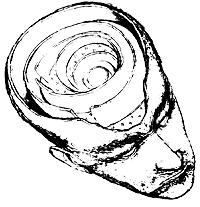

OPEN ROAD
I KILLED A DOG THE OTHER DAY ON the county road near my new house; a black, mixed-breed male named Coal. He was the second-at least I believe so, for I never found out what happened to the first. I hit that one in Baja California in the middle of the night many years ago on an isolated stretch of what was then a narrow, shoulderless road leading from Tijuana, on the northern Mexican border, down the spine of the peninsula. If driving through the arid Baja landscape seemed strange and otherworldly by day, it became altogether underworldly by night, crowded with fleeting shapes, odd sounds and alien s cents. As the miles clicked by, macabre images from Mexican folk art kept popping into mind. Open graves, cadavers strumming guitars. Then, suddenly, a canine form-emaciated, sallow, grim-shot across the headlights. Thud. The station wagon shuddered as I pulled hard left to keep it on the road. Regaining control and slowing, I decided not to stop, knowing full well no mortal creature could have survived the impact of a fully loaded Chrysler doing, what, about 65. Asleep in the back, the kids hadn't stirred. Good. It would remain a private matter between me and the authorities of the night, local deities who I assumed were used to this sort of thing. I never mentioned to the kids later what had happened either, afraid, I suppose, that dog death would disquiet them or that they might see me in a different, more lethal light. I was also surprised by how quickly and guiltlessly I was able to dismiss the incident, reassuring myself that I could never have stopped in time and that, anyway, it was probably a feral dog whose absence would be felt by no other living thing in this world. Thus absolved, I coaxed the Chrysler back up to cruising speed and started thinking about huevos rancheros and a tequila sunrise.
Coal, by contrast, met his end in broad daylight amid the most benign, loving and familiar landscape on earth, both to him and to me. Instead of yuccas, cacti and century plants, it was oaks, maples and spruce that stretched westward down to the river, the Hudson, while to the east orchards and vineyards covered patches of rolling hillside like crocheted Dutch tablecloths, laundered and pressed. Though this is a poor county and physically unkempt in spots, wildness, chaos and the old menace lurking beneath the surface have been largely groomed out of existence, replaced by terra domestica, achingly beautiful in its way, particularly in the full grip of spring. Miracle-Gro seemed to gush through every section of vascular tissue in the valley that day, I remember thinking. North of my townlet, as I like to call it, the county highway department had just groomed the shoulder along Route 9G, and the fragrance of grass cuttings still saturated the air. In the back, my own dog, Arthur, sat with his head and shoulders poked out the window, his pinkish nostrils busily sampling the flood of information-rich molecules streaming by. We were doing about 40, not in any hurry. Ahead, on my right but out of sight atop an embankment, Coal's nostrils also quivered, detecting his "home," the weathered farmhouse that fatefully sat across the road. He bolted, allowing neither of us time to get out of the way. This second thud traveled the same path: from the left-front Michelin across the axle, up the steering column and through the wheel to the nerve endings in my hands. Where it went after that I can't precisely say, but the effect was primitive, and sickening. I pulled over and stopped, court already in session in my brain and nearing a verdict. "There was nothing I could do," I pleaded silently.
The postmortem formalities lasted perhaps 20 minutes, focused on Coal's body, which straddled the double yellow line. The driver behind me, the only witness, had also stopped and at once took up my defense. "You didn't have a chance, buddy," he told me, repeating his testimony when the dog's owner appeared, and yet again when the sheriff pulled up. "Thanks for stopping," is `all the owner said to me, accepting my regrets and the offer of a blanket. He cradled Coal in it and walked slowly toward the house. "Any damage to your car?" asked the sheriff, ever vigilant toward private property. Soon I was under way again, found not guilty, but this time in a case in which the victim had a name and would be deeply missed. I wore my innocence in less than total comfort.
One of the pleasures of moving into a country place is getting to know the plants and the animals. For me, trees and shrubs take patience. Animals are easier, both because there are fewer and more different kinds, and because I learned to recognize them instantly in the cuddly, picture-book days of prekindergarten, as we all did. Yet animals-small wild mammals, in particular-are mobile, secretive and resistant to quick census. Indeed, my list of local species would be only half complete were it not for route 9G. The truth, of course, is that road kills allow me to flesh out my picture of the zoological neighborhood. In the first two weeks of residence, for example, I came upon just about everything, including a tawny fox (or what was left of it: an irregular golden shadow on the pavement), in the few miles between my house and the townlet.
Anyway, after Coal's death, it occurred to me how inured I had become to the costs of maintaining human right-of-way. But, here again, my conscience simply shrugged. At about this time I had fallen in love with a couple of nearby frogs, or rather with their throaty serenade, which rose each evening from the ephemeral minimarsh that had collected over the winter on the tarp covering the swimming pool, not yet opened for the season. One of these dazzling tenors had even taken to posting itself at the rear of the skimming chamber. Since part of the chamber's opening reaches above the tarp level, the effect was that of an amplifier. The decibels, as a result, rattled the kitchen window and shook the trees. Surrounded by such amphibious glissandos, I might well have been sitting in a tropical rain forest, an audience of one in a throbbing green hall. It was pure magic, night after night.
Then, following a short, two-day, trip, I returned home and saw that the tarp was removed. The pool service people had scrubbed, vacuumed, de-algaefied, chlorinated, and turned on the filter. My chemical bath had been duly prepared.
That night I sat outside in silence, missing the frogs, whom I had not thought to name.
|
 |
|
|